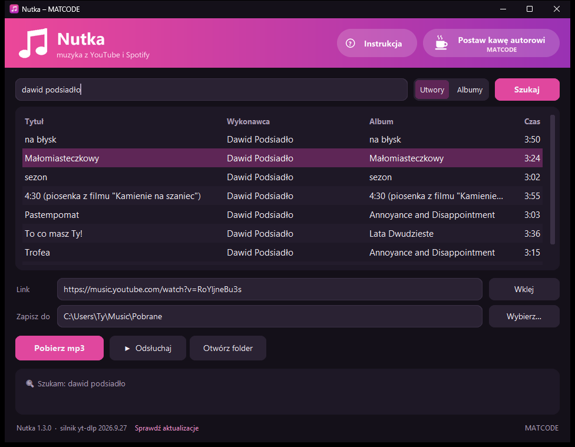
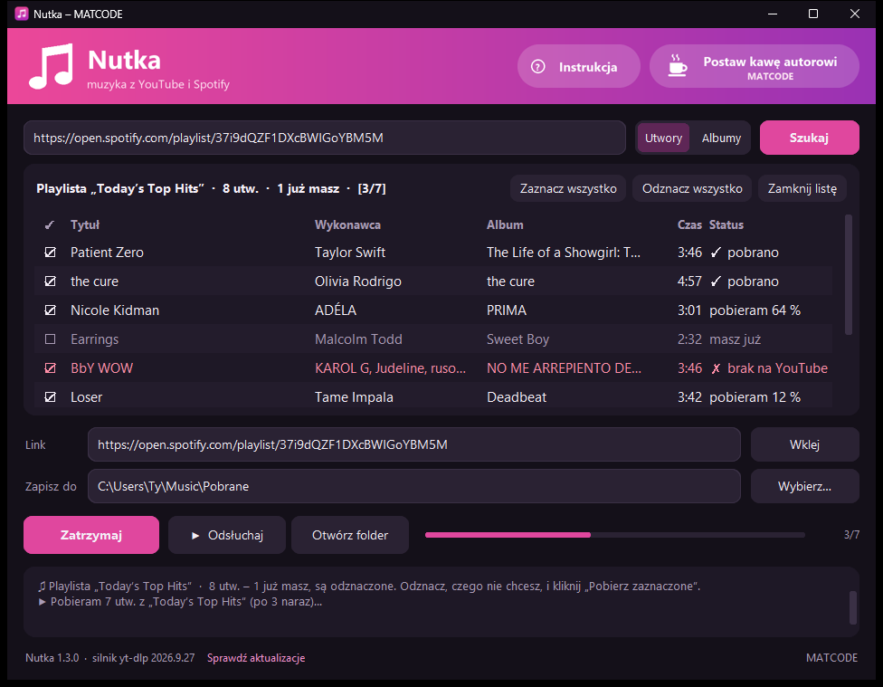

Instrukcja
Nutka wyszukuje muzykę w YouTube Music, pozwala ją odsłuchać i zapisuje jako mp3 z okładką i opisem utworu. Pobiera też całe albumy i playlisty ze Spotify. Ta strona opisuje wszystko po kolei; ta sama kopia otwiera się z programu, także bez internetu.
Instalacja
Zajmuje około minuty i nie wymaga uprawnień administratora.
-
Pobierz instalator
Plik Nutka-Setup.exe ze strony programu (przycisk „Pobierz”) albo z GitHuba. Możesz go też skopiować od kogoś, np. na pendrivie.
-
Uruchom go
Klikaj Dalej. Zaznacz „Skrót na pulpicie”, jeśli chcesz mieć ikonę na pulpicie.
-
Zakończ
Zostaw zaznaczone „Uruchom Nutkę” i kliknij Zakończ. Później Nutkę otwierasz z menu Start albo ze skrótu.
Windows pokazał niebieskie okno „System Windows ochronił ten komputer”? Kliknij Więcej informacji, a potem Uruchom mimo to. To ostrzeżenie pojawia się przy każdym nowym programie bez płatnego podpisu cyfrowego i nie znaczy, że plik jest groźny. Kod Nutki jest w całości jawny na GitHubie.
Wymagania: Windows 10 lub 11 (64-bit), około 400 MB miejsca na dysku, internet do wyszukiwania i pobierania muzyki.
Okno programu
Wyszukiwarka u góry, wyniki na środku, pola i przyciski na dole.

- Pole u góry
- Wpisz tytuł lub wykonawcę albo wklej link z YouTube lub Spotify i naciśnij Enter.
- Utwory / Albumy
- Czy szukasz pojedynczych piosenek, czy całych płyt.
- Lista wyników
- Klik zaznacza utwór, dwuklik od razu go pobiera.
- Link
- Adres zaznaczonego utworu. Możesz tu też wkleić link z YouTube przyciskiem Wklej.
- Zapisz do
- Folder na pliki mp3. Zmienisz go przyciskiem Wybierz….
- Pobierz mp3
- Pobiera to, co jest w polu „Link”. W trakcie obok pojawia się pasek postępu z procentami.
- ▶ Odsłuchaj
- Gra zaznaczony utwór bez pobierania. W trakcie zmienia się w ■ Stop, a obok pojawia się Następny ›.
- Otwórz folder
- Otwiera folder z pobranymi plikami w Eksploratorze.
- Okienko na dole
- Krótkie komunikaty: co się właśnie dzieje i czy się udało.
- Lewy dolny róg
- Numer wersji i link Sprawdź aktualizacje.
- Prawy górny róg
- Instrukcja otwiera tę stronę, także bez internetu. Postaw kawę autorowi otwiera stronę, na której możesz dobrowolnie wesprzeć autora.
Wyszukiwanie i odsłuch
Wpisz tytuł utworu albo wykonawcę i naciśnij Enter albo Szukaj. Wyniki pochodzą z YouTube Music, więc trafiają w oficjalne wersje utworów. Przełącznik Utwory / Albumy decyduje, czy szukasz piosenek, czy całych albumów.
- Klik na wynik zaznacza go, a jego adres pojawia się w polu „Link”.
- Dwuklik na wynik od razu pobiera go jako mp3.
- ▶ Odsłuchaj puszcza zaznaczony utwór bez pobierania. Przy albumie gra cały album po kolei.
- W trakcie odsłuchu przycisk zmienia się w ■ Stop, a obok pojawia się Następny ›, który przeskakuje do kolejnego utworu albumu.
- Kliknięcie innego wyniku w trakcie odsłuchu od razu przełącza na nowy utwór.
Pobieranie mp3
Zaznacz wynik albo wklej link i kliknij Pobierz mp3. Pasek postępu pokazuje pobieranie, a w okienku na dole pojawia się tytuł i na końcu „Gotowe”.
| Co pobierasz | Skąd wziąć | Jak |
|---|---|---|
| Utwór | wyszukiwarka | dwuklik na wyniku albo zaznacz i Pobierz mp3 |
| Album | wyszukiwarka, przełącznik „Albumy” | jak wyżej, pobiera się cały album do podfolderu |
| Utwór z YouTube | link youtube.com/watch?v=… | wklej w pole „Link” (przycisk Wklej) i Pobierz mp3 |
| Playlista z YouTube | link youtube.com/playlist?list=… | wklej w pole „Link” i Pobierz mp3 |
| Utwór, album lub playlista ze Spotify | w Spotify: Udostępnij → Kopiuj link | wklej w pole wyszukiwania i naciśnij Enter, szczegóły niżej |
Pliki trafiają do folderu Muzyka \ Pobrane (C:\Users\<Ty>\Music\Pobrane). Folder zmienisz przyciskiem Wybierz…, a otworzysz przyciskiem Otwórz folder. Album i playlista lądują w osobnym podfolderze, album z numerami utworów.
Muzyka zawsze pochodzi z YouTube, także przy linkach ze Spotify: Nutka bierze ze Spotify tylko tytuł, wykonawcę i okładkę, a dźwięk pobiera z YouTube. Dlatego czasem trafi się inna wersja utworu, np. na żywo. Jakość to mp3 około 250–270 kbps.
Playlisty i albumy ze Spotify
Całą playlistę albo album pobierzesz w trzech krokach, a przy kolejnym razie Nutka dobierze tylko nowe utwory.
Skopiuj link
W Spotify przy playliście lub albumie kliknij … → Udostępnij → Kopiuj link.
Wklej w Nutce
W pole wyszukiwania, potem Enter. Po kilku sekundach zobaczysz listę utworów z ptaszkami.
Pobierz zaznaczone
Odznacz to, czego nie chcesz (klik w ptaszek albo dwuklik na wierszu), i kliknij Pobierz zaznaczone.

- Przy każdym utworze widać jego stan: szukam, pobieram 64 %, ✓ pobrano albo ✗ błąd. Nutka pobiera po 3 utwory naraz; Zatrzymaj przerywa.
- Utwory, które już masz, są oznaczone masz już i odznaczone. Wystarczy wczytać playlistę ponownie, żeby dobrać nowe.
- Jeśli coś się nie uda, te utwory zostają zaznaczone. Kliknij Pobierz zaznaczone jeszcze raz, żeby spróbować ponownie.
- Playlista trafia do podfolderu z jej nazwą, album z numerami utworów. Pliki mają tytuł, wykonawcę, album i okładkę ze Spotify.
- Zamknij listę wraca do zwykłego wyszukiwania.
Nutka widzi tylko publiczne playlisty. Prywatnych playlist i „Polubionych utworów” nie wczyta. Ustaw playlistę jako publiczną albo skopiuj utwory do publicznej.
Aktualizacje
Nic nie musisz robić, Nutka aktualizuje się sama.
YouTube co jakiś czas zmienia swoją stronę, więc program przy każdym starcie i co 6 godzin sprawdza w tle, czy jest nowszy „silnik pobierania”, i po cichu go podmienia. Bez internetu albo gdy aktualizacja się nie uda, program działa dalej na dotychczasowej wersji.
Gdy pojawi się nowa wersja całego programu, Nutka pokaże okienko z opisem zmian. Kliknij Zaktualizuj teraz: program sam pobierze nową wersję, zainstaluje ją i uruchomi się ponownie (około minuty). Przypomnij później zamyka okienko do następnego uruchomienia, a Pomiń tę wersję nie będzie już o niej przypominać.
Ręcznie sprawdzisz to linkiem Sprawdź aktualizacje w lewym dolnym rogu okna. Obok stoi numer Twojej wersji.
Każde wydanie jest podpisane cyfrowo kluczem autora. Nutka sprawdza podpis i sumę kontrolną, zanim uruchomi instalator, i pobiera go wyłącznie z oficjalnej strony wydań na GitHubie.
Gdy coś nie działa
| „System Windows ochronił ten komputer” przy instalacji | Więcej informacji → Uruchom mimo to |
|---|---|
| Antywirus blokuje instalator | w Zabezpieczeniach Windows: Ochrona przed wirusami i zagrożeniami → Historia ochrony → wybierz zablokowany plik → Akcje → Zezwalaj na urządzeniu; potem uruchom instalator jeszcze raz (inny antywirus: przywróć plik z kwarantanny) |
| Wyszukiwanie lub pobieranie nie działa | sprawdź internet; zamknij i otwórz Nutkę (przy starcie sama się zaktualizuje) |
| Jeden utwór się nie pobiera, reszta tak | ten film może być zablokowany na YouTube (np. ograniczenie wiekowe); wybierz inny wynik |
| Ze Spotify przyszła inna wersja utworu | wyszukaj utwór w Nutce i wybierz właściwą wersję z wyników |
| Playlista ze Spotify się nie wczytuje | sprawdź, czy jest publiczna; prywatnych playlist i „Polubionych utworów” Nutka nie widzi |
| Wklejony tekst nie jest traktowany jak link | Nutka przyjmuje tylko prawdziwe adresy z YouTube i Spotify (zaczynające się od https:// albo nazwy strony); inny tekst trafia do wyszukiwarki |
Problem się powtarza? Przygotuj raport. Otwórz folder programu (%LOCALAPPDATA%\Programs\Nutka), kliknij pasek adresu Eksploratora, wpisz cmd i naciśnij Enter, a w czarnym oknie wpisz Nutka.exe --autotest > raport.txt. Plik raport.txt pokaże, czego brakuje. Dołącz go do zgłoszenia na GitHubie.
Odinstalowanie
Wejdź w Ustawienia → Aplikacje → Zainstalowane aplikacje, znajdź Nutkę i wybierz Odinstaluj. Program usuwa się w całości, razem z pobranymi aktualizacjami. Twoje pliki mp3 w folderze Muzyka \ Pobrane zostają.
Jeśli masz jeszcze starą wersję pod nazwą Maestro (Nutka to jej następczyni), odinstaluj ją w ten sam sposób.